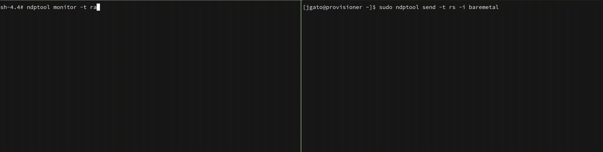
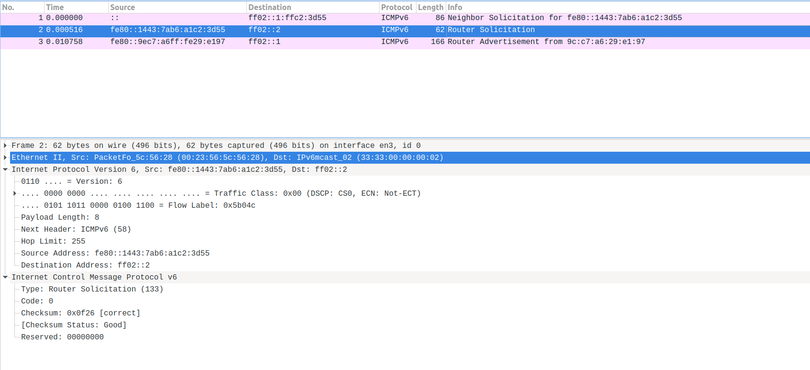
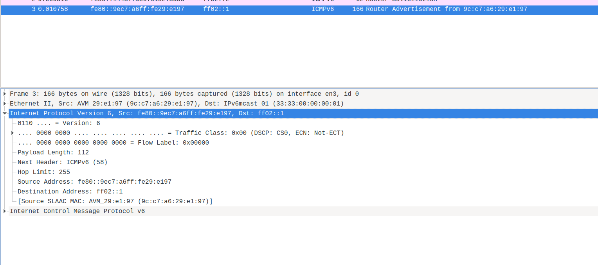
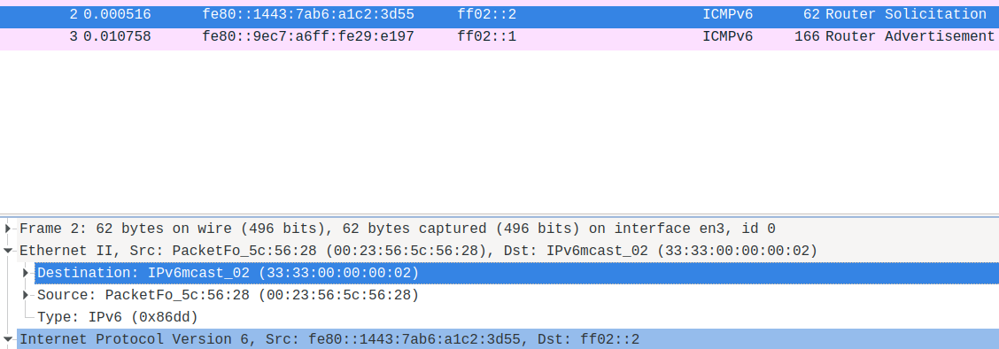
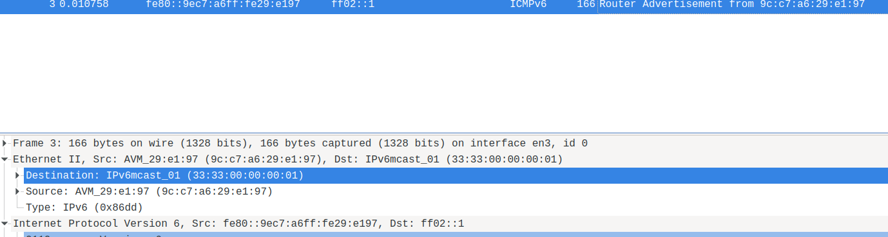

Just a little of IPv6
Just a little of IPv6⌗
Just some basic stuff and learning about IPv6.
My intention is to keep this tutorial live, as long as I learn more about IPv6. But, I dont want to finish with a too complex tutorial. Any feedback is welcome.
To play with IPv6 commands, I will use a laboratory composed by three servers with IPv6 enabled. One of the servers is just a regular provisioner server, that we use to deploy other servers. The we have a coupe of Openshift Single Node servers.
We will just start for the beginning, get the IPv6 addresses (we will see why I use addresses instead of address later). In this case, I am using br-ex, which is the main interface with an Openshift installation.
# ip -6 addr show br-ex
14: br-ex: <BROADCAST,MULTICAST,UP,LOWER_UP> mtu 1500 qdisc noqueue state UNKNOWN group default qlen 1000
inet6 2620:52:0:1351:67c2:adb3:cfd6:83/64 scope global noprefixroute
valid_lft forever preferred_lft forever
inet6 fe80::9640:c9ff:fe1f:bf64/64 scope link noprefixroute
valid_lft forever preferred_lft forever
Here there are two IPv6 addresses on the br-ex interface.
-
[2620:52:0:1351:67c2:adb3:cfd6:83] Unicast Address of type Global Unicast Address is the main IPv6 assigned to this host in this interface.
-
[fe80::9640:c9ff:fe1f:bf64] Unicast Address of type Local Link Address. This is automatically created for any interface with IPv6. It is an IP created with some prefix rules and the MAC address of the interface. More about how to calculate Link Local
IPv6 addresses structure, prefix and subnets⌗
An IPv6 is a 128bit address formatted as 8 quads of hexadecimal values. The first 4 quads are the Network Prefix, and the last 4 quads identify an unique interface.
[2620:0052:0000:1351:67c2:adb3:cfd6:83]
(——Network Prefix—|—–Interface ID—-)
Network Prefix = 64
Interface ID = 64
So here the network is: [2620:0052:0000:1351::] that ensure unique interfaces from [2620:0052:0000:1351:0000:0000:0000] to [2620:0052:0000:1351:ffff:ffff:ffff:ffff]. Actually, 18446744073709551616 of unique interfaces/hosts.
The first 4 quads are for the Network Prefix, 64 bits. But the network can be divide into different subnet by the Prefix Length. The Prefix Length indicates how many bits belongs to the network from the Network Prefix:
-
/64 bits Prefix Length, indicates that the 64 first bits, of the Network Prefix, belongs to the network. So there is only one Network or Subnet [2620:0052:0000:1351::].
-
/60 bits Prefix Length, indicates that the first 60 bits belongs to the network, and the other 4 bits are used for subnets. 4 bits for subnet means 16 subnets.
From [2620:0052:0000:1350:: /60] to [2620:0052:0000:135f:: /60]
-
/56 bits Prefix Length, indicates that the 56 first bits belongs to the network, and you have other 16 bits for subnets: 256 subnets
From [2620:0052:0000:1300:: /60] to [2620:0052:0000:13ff:: /60]
You can use whatever Prefix Length, but it is recommended to use in ranges of 4 bits. Because it facilitates the reading/understanding. You are just selecting how many hexadecimal characters, from the last part of the Network Prefix, are used for subnets.
Each Network/subnet has, anyway, the other 64 bits for hosts/interfaces (18446744073709551616). Therefore, there should be more than enough address. And much more, depending how you create the subnets.
The first quad is reserved and it adds meaning about the kind of IPv6 address is representing (we will see this later).
Global Unicast Address⌗
The GUA is defined by the prefix of the address. The 3 first bits, 001, as reserved for GUA. But the prefix range are the first 48 bits. Basically, whatever between 2000 and 3FFF is a GUA. In IPv4, what we commonly know as Public IP. Or routable IPs.
Better explained here
More detail about his GUA:
| IP address | 2620:52:0:1351:67c2:adb3:cfd6:83/64 |
|---|---|
| type | GLOBAL-UNICAST |
| network | 2620:52:0:1351:: |
| Prefix length | 64 |
| network range | 2620:0052:0000:1351:0000:0000:0000:0000-2620:0052:0000:1351:ffff:ffff:ffff:ffff |
| total IP addresses | 18446744073709551616 |
It is a GCU from the network 2620:52:0:1351::
Local Link Address⌗
Prefix: FE80::/10
This is an address that helps with communication on a same network segment. It is useful to check connectivity with host/routers sharing a same network segment.
In this case, I will ping from a sever sno3, to a server sno4 with the LL ([fe80::9640:c9ff:fe1f:c2a5]). These two server belongs to the same lab/network/segment so can ping each other.
[sno3]# ping fe80::9640:c9ff:fe1f:c2a5 -I br-ex
ping6: Warning: source address might be selected on device other than br-ex.
PING fe80::9640:c9ff:fe1f:c2a5(fe80::9640:c9ff:fe1f:c2a5) from :: br-ex: 56 data bytes
64 bytes from fe80::9640:c9ff:fe1f:c2a5%br-ex: icmp_seq=1 ttl=64 time=0.847 ms
64 bytes from fe80::9640:c9ff:fe1f:c2a5%br-ex: icmp_seq=2 ttl=64 time=0.180 ms
64 bytes from fe80::9640:c9ff:fe1f:c2a5%br-ex: icmp_seq=3 ttl=64 time=0.245 ms
64 bytes from fe80::9640:c9ff:fe1f:c2a5%br-ex: icmp_seq=4 ttl=64 time=0.240 ms
64 bytes from fe80::9640:c9ff:fe1f:c2a5%br-ex: icmp_seq=5 ttl=64 time=0.357 ms
64 bytes from fe80::9640:c9ff:fe1f:c2a5%br-ex: icmp_seq=6 ttl=64 time=0.224 ms
64 bytes from fe80::9640:c9ff:fe1f:c2a5%br-ex: icmp_seq=7 ttl=64 time=0.200 ms
In the same network, I have another server (provisioner) with the following network configuration:
[provisioner]$ ip -6 addr show
1: lo: <LOOPBACK,UP,LOWER_UP> mtu 65536 state UNKNOWN qlen 1000
inet6 ::1/128 scope host
valid_lft forever preferred_lft forever
7: provisioning: <BROADCAST,MULTICAST,UP,LOWER_UP> mtu 1500 state UP qlen 1000
inet6 fd00:1101::1/64 scope global noprefixroute
valid_lft forever preferred_lft forever
inet6 fe80::10e2:b68f:8a13:4d06/64 scope link noprefixroute
valid_lft forever preferred_lft forever
15: baremetal: <BROADCAST,MULTICAST,UP,LOWER_UP> mtu 1500 state UP qlen 1000
inet6 2620:52:0:1351:67c2:adb3:cfd6:f31b/64 scope global dynamic noprefixroute
valid_lft 2591832sec preferred_lft 604632sec
inet6 fe80::e2f1:1d3d:ce3d:8fbb/64 scope link noprefixroute
valid_lft forever preferred_lft forever
This server is connected to more than one network.
The ‘baremtal’ netwok is a bridge over eno3 interface.
[provisioner]$ ip addres show eno3
4: eno3: <BROADCAST,MULTICAST,UP,LOWER_UP> mtu 1500 qdisc mq master baremetal state UP group default qlen 1000
link/ether 94:40:c9:1f:bf:87 brd ff:ff:ff:ff:ff:ff
The eno3 interface shares the same network than the previous servers (sno3 and sno4) . They share the share segment. So, you can ping to the LL of the ‘barmetal’ network on the provisioner from sno3.
[fe80::e2f1:1d3d:ce3d:8fbb] is a LL address of the provisioner in this shared network.
[sno3]# ping fe80::e2f1:1d3d:ce3d:8fbb -I br-ex
ping6: Warning: source address might be selected on device other than br-ex.
PING fe80::e2f1:1d3d:ce3d:8fbb(fe80::e2f1:1d3d:ce3d:8fbb) from :: br-ex: 56 data bytes
64 bytes from fe80::e2f1:1d3d:ce3d:8fbb%br-ex: icmp_seq=1 ttl=64 time=0.300 ms
64 bytes from fe80::e2f1:1d3d:ce3d:8fbb%br-ex: icmp_seq=2 ttl=64 time=0.303 ms
64 bytes from fe80::e2f1:1d3d:ce3d:8fbb%br-ex: icmp_seq=3 ttl=64 time=0.224 ms
The provisioner server is connected to other networks, like the ‘provisioning’ one. In this case over the eno2 interface:
[provisioner]$ ip addres show eno2
3: eno2: <BROADCAST,MULTICAST,UP,LOWER_UP> mtu 1500 qdisc mq master provisioning state UP group default qlen 1000
link/ether 94:40:c9:1f:bf:86 brd ff:ff:ff:ff:ff:ff
So, the LL address of network ‘provisioning’ is using other physical interface, other segment, and cannot be pinged from the sno3 server:
[sno3]# ping fe80::10e2:b68f:8a13:4d06 -I br-ex
ping6: Warning: source address might be selected on device other than br-ex.
PING fe80::10e2:b68f:8a13:4d06(fe80::10e2:b68f:8a13:4d06) from :: br-ex: 56 data bytes
From fe80::9640:c9ff:fe1f:bf64%br-ex: icmp_seq=1 Destination unreachable: Address unreachable
From fe80::9640:c9ff:fe1f:bf64%br-ex: icmp_seq=2 Destination unreachable: Address unreachable
From fe80::9640:c9ff:fe1f:bf64%br-ex: icmp_seq=3 Destination unreachable: Address unreachable
In summary, LL is very useful to check connectivity. But we will see later, how is also useful in Node Discovering Protocol.
Private address⌗
With IPv6 Private address has the prefix: fc00::/7
Solicited-node multicast address⌗
Prefix: FF02::1:FF /104:
This is a very special multicast address, automatically assigned. It is used to obtain Layer 2 addresses (MAC) of other nodes. It is used for Node Discovery Protocol to find destinations. Similar to IPv4 ARP.
So, we can check how our servers has this assigned:
# ip -6 maddr show br-ex
14: br-ex
inet6 ff02::1:ff00:0 users 2
inet6 ff02::1:ffd6:83
inet6 ff02::1:ff1f:bf64
inet6 ff02::2
inet6 ff02::1
inet6 ff01::1
But, we can see there is no only one multicast group the server has joined. Which one is the solicited-node multicast address? The solicited-node multicast address is derived from the IPv6 address, so:
# ip -6 addr show br-ex
14: br-ex: <BROADCAST,MULTICAST,UP,LOWER_UP> mtu 1500 qdisc noqueue state UNKNOWN group default qlen 1000
inet6 2620:52:0:1351:67c2:adb3:cfd6:83/64 scope global noprefixroute
valid_lft forever preferred_lft forever
inet6 fe80::9640:c9ff:fe1f:bf64/64 scope link noprefixroute
valid_lft forever preferred_lft forever
We can see, there is a coincidence from the 6 last hex characters of our Unicast Address and the Solicited-Node Multicast Address.
-
Unicast Address 2620:52:0:1351:67c2:adb3:cfd6:83 and Multicast ff02::1:ffd6:83
-
Link Local Address fe80::9640:c9ff:fe1f:bf64 and Multicast ff02::1:ff1f:bf64
When a node needs to communicate to another node, and it does not know the MAC address. It will use the NDP protocol (Node Solitication message) sending a message destination to the Solicited-Node Multicast Address (ff02::1:ff1f:bf64), asking for who is fe80::9640:c9ff:fe1f:bf64. This node, which is listening on the Multicast Address, will see the message is specifically for him and it will return the MAC address.
Other multicast-address⌗
ff01::1 All IPv6 devices
ff01::2 All IPv6 routers
In the previous example, you can see how our server has also joined the multicast address for ff01::1 (all devices).
If it were a Router, it will also listen on ff01::2
With the scope of Link Local address you will have:
ff02::1 All IPv6 devices
ff02::2 All IPv6 routers
Neighbor Discovery Protocol (NDP)⌗
This protocol, with a similar function to IPv4 ARP, is based on a set of different messages that allows to send messages to unknown destination. It makes use of some of the previous explained unicast and multicast addresses.
RA — Router advertisement: which is sent by routers with network configuration. Sent periodically.
RS — Router Solicitation: when a new interface is created, it is automatically generated. It makes RA to intermediately sent a RA.
Example: from different servers, but sharing a Router. Server-1 will send a RS. From server-2 we will monitor RA messages. The Router in the network will respond with a RA. To follow all the process we will use the ndptool
# server-2 to monitor Route Advertisement messages:
ndptool monitor -t ra
# server-1 to send a Route Solicitiation message:
ndptool send -t rs -i br-ex

Some important things from the received RA message:
NDP payload len 56, from addr: fe80::a81:f4ff:fea6:dc01, iface: br-ex
Type: RA
Hop limit: 64
Managed address configuration: no
Other configuration: no
Default router preference: medium
Router lifetime: 1800s
Reachable time: unspecified
Retransmit time: unspecified
Source linkaddr: 08:81:f4:a6:dc:01
Prefix: 2620:52:0:1351::/64, valid_time: 2592000s, preferred_time: 604800s, on_link: yes, autonomous_addr_conf: yes, router_addr: no
-
From [fe80::a81:f4ff:fea6:dc01], this is the LL from the Router. LL addresses are used in this protocol. Some advantages: it is unique, so routers will always have the same LL Address, the NDP protocol can be used to autoconfigure network on host (no Unicast address yet, but already have a LL). More details here
-
It also contains the source MAC address (Source linkaddr): which finish similar to the LL. Remember the LL is derived from MAC addr.
-
We receive a route with a network prefix: Prefix: [2620:52:0:1351::/64] that is added to the route table of our server (network configuration and discovery):
# ip -6 route | grep 2620:52:0:1351::
2620:52:0:1351::/64 dev br-ex proto kernel metric 800 pref medium
fd02::/112 via 2620:52:0:1351:: dev br-ex metric 1024 mtu 1400 pref medium
default via 2620:52:0:1351:: dev br-ex proto static metric 800 pref medium
We could also monitor the RS message with:
$> ndptool monitor -t rs
NDP payload len 8, from addr: fe80::e2f1:1d3d:ce3d:8fbb, iface: br-ex
Type: RS
Following an RS message in detail. A message that can be sent by any server when boots, to discover possible Routers.
(wireshark screencaptures not from my lab, thanks to Raskia Nayanajith

The source is the LL of the server making the Router Solicitation. As it is explained above, it is the way of working of NDP.
The destination is the multicast address that all the routers will join. In that way, the router will capture the message and it will send the RA.
Notice how the server sending the solicitation dont need to know the router address. Neither, the server sending the solicitation, needs to have already assigned a real IPv6 Global Unicast Address. Only need the LL to start.
The response from the Router is a RA. This time, the source is the Router LL, and destination, the Multicast Address for all the hosts.

radvd tool⌗
Linux IPv6 Router Advertisement Daemon. It can be used to configure IPv6 networks, and it is in charge of sending RA (and responding RS).
Not going in detail in this tutorial about how to use/configure radvd
Here an example of a radvd config file:
interface baremetal
{
AdvManagedFlag on;
# A flag indicating whether or not the router sends periodic router advertisements and responds to router solicitations.
# It needs to be on to enable advertisement on this interface.
AdvSendAdvert on;
# The minimum time allowed between sending unsolicited multicast router advertisements from the interface, in seconds.
MinRtrAdvInterval 30;
# The maximum time allowed between sending unsolicited multicast router advertisements from the interface, in seconds.
MaxRtrAdvInterval 100;
# The lifetime associated with the default router in units of seconds.
# A lifetime of 0 indicates that the router is not a default router and should not appear on the default router list.
AdvDefaultLifetime 9000;
prefix 2620:52:0:1305::/64
{
# Indicates that this prefix can be used for on-link determination.
AdvOnLink on;
# Indicates that this prefix can be used for autonomous address configuration as specified in RFC 4862.
AdvAutonomous off;
# Indicates that the address of interface is sent instead of network prefix.
AdvRouterAddr on;
};
route ::/0 {
# The lifetime associated with the route in units of seconds.
AdvRouteLifetime 9000;
# The preference associated with the default router, as either "low", "medium", or "high".
AdvRoutePreference low;
# Upon shutdown, announce this route with a zero second lifetime.
RemoveRoute on;
};
};
-
‘interface baremetal’ indicates the configuration to be applied in this interface
-
Then you have a set of flags and configs for this interface. Such as the advertising frequencies.
-
‘prefix’ announces a network and some configuration for it. It can be used, for autoconfiguration in the hosts. But in this case, the AdvAutonomous off avoids this situation. In this lab, the hosts ip address are configured statically.
-
‘route’ announces the routes to be used by the hosts.
-
‘route ::/0’ is the default route
Before using this configuration on my environment. I can listen for RAs:
# ndptool monitor -t ra
NDP payload len 56, from addr: fe80::a81:f4ff:fea6:dc01, iface: br-ex
Type: RA
Hop limit: 64
Managed address configuration: no
Other configuration: no
Default router preference: medium
Router lifetime: 1800s
Reachable time: unspecified
Retransmit time: unspecified
Source linkaddr: 08:81:f4:a6:dc:01
Prefix: 2620:52:0:1351::/64, valid_time: 2592000s, preferred_time: 604800s, on_link: yes, autonomous_addr_conf: yes, router_addr: no
I already see some announces for that network. This means, that other router is sending that information. For some reason, the RA only includes Prefix, but no Routes. We dont know how this Router was configured. The RA comes from [fe80::a81:f4ff:fea6:dc01]. Maybe some other router in the network, but no the provisioner when I am working. And not under my control.
To avoid some conflicts, and for testing, I will add to the radvd config file the following.
clients
{
#sno3
fe80::9640:c9ff:fe1f:bf64;
#sno4
fe80::21d:72ff:fe96:aaff;
};
So my radvd configuration will only affect to these two servers. Now, I can start radvd in my provisioner server.
From the clients allowed (sno3, sno4), you will start receiving the RAs. Now, from [fe80::e2f1:1d3d:ce3d:8fbb]. Which is the LL of the provisioner where I have just configured radvd:
NDP payload len 80, from addr: fe80::e2f1:1d3d:ce3d:8fbb, iface: br-ex
Type: RA
Hop limit: 64
Managed address configuration: yes
Other configuration: no
Default router preference: medium
Router lifetime: 9000s
Reachable time: unspecified
Retransmit time: unspecified
Source linkaddr: 94:40:c9:1f:bf:87
Prefix: 2620:52:0:1305::/64, valid_time: 86400s, preferred_time: 14400s, on_link: yes, autonomous_addr_conf: no, router_addr: yes
Route: ::/0, lifetime: 9000s, preference: low
Our Router announces Prefix but also the default Route to the two selected clients.
From time to time you will also see the RAs announced by the other Router in the environment [fe80::a81:f4ff:fea6:dc01].
When I stop my radvd, there will be an RA to delete the Route
NDP payload len 104, from addr: fe80::e2f1:1d3d:ce3d:8fbb, iface: br-ex
Type: RA
Hop limit: 64
Managed address configuration: yes
Other configuration: no
Default router preference: medium
Router lifetime: 0s
Reachable time: unspecified
Retransmit time: unspecified
Source linkaddr: 94:40:c9:1f:bf:87
Prefix: 2620:52:0:1305::/64, valid_time: 86400s, preferred_time: 14400s, on_link: yes, autonomous_addr_conf: no, router_addr: no
Route: ::/0, lifetime: 0s, preference: low
with the lifetime: 0s.
IPv6 Layer 2⌗
I dont cover in detail this layer in this tutorial. Just a quick comment about this layer and the NDP.
All the Multicast Addresses in IPv6 will have a Multicast Layer 2 Address. It will be composed in the way of 33:33:xx:xx:xx:xx, with the last 32bits corresponding to the last 32bits of the Layer-3 Multicast Address. Therefore, a router subscribed to ff02::2 will have a corresponding Layer 2 Address: 33:33:00:00:00:02
When a Router receives a RS in the ff02::2 address, this is transformed into Layer-2 33:33:33:00:00:00:02. So the message has reached to a right destination and the router will create the answer.
You can see also here in this network capture:

The message reaches to Layer 3 ff02::2 and Layer 2 33:33:00:00:00:02
The response will work the other way around. The router will send a RA to ff02::1. This will be received for all the hosts in the Multicast Layer-3 ff02::1 and the Multicast Layer-2 33:33:00:00:00:02

(all the wireshark screencaptures thanks to Raskia Nayanajith: https://blog.apnic.net/2019/10/18/how-to-ipv6-neighbor-discovery/ )